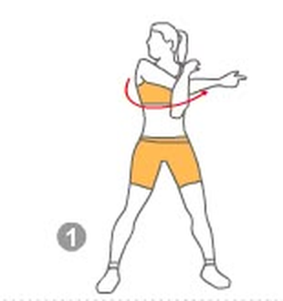
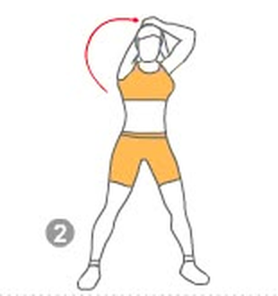
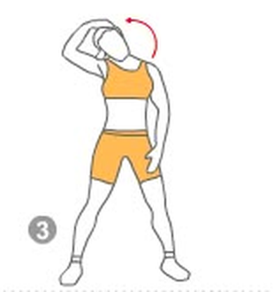
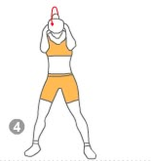
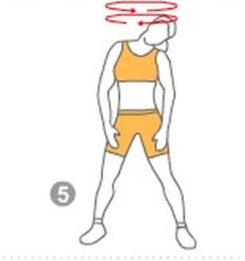
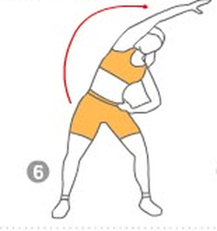
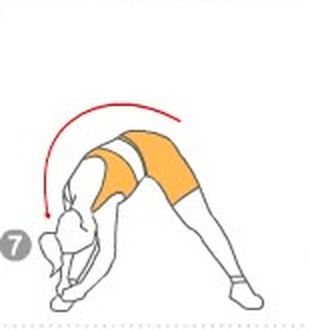
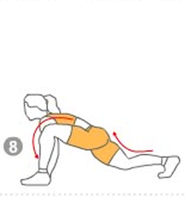

Alongue-se com calma
Alguns minutos de alongamento ajudam a reduzir a tensão muscular, melhorar os movimentos e trazer mais conforto para o dia.
Faça cada movimento devagar, sem forçar. Pare se sentir dor.

Ombro
Passe um braço à frente do peito. Com a outra mão, puxe-o suavemente em direção ao corpo.
15 segundos de cada lado
Tríceps
Leve um braço por trás da cabeça. Com a outra mão, pressione suavemente o cotovelo para baixo.
15 segundos de cada lado
Pescoço — lateral
Incline a cabeça para um lado e apoie a mão suavemente. Mantenha os ombros relaxados.
15 segundos de cada lado
Pescoço — para frente
Entrelace as mãos atrás da cabeça e incline-a suavemente para baixo, sem puxar com força.
15 segundos
Rotação do pescoço
Faça movimentos lentos com a cabeça, olhando para um lado e depois para o outro.
5 vezes para cada lado
Lateral do tronco
Eleve um braço e incline o corpo para o lado. Mantenha os joelhos levemente flexionados.
15 segundos de cada lado
Parte de trás das pernas
Afaste as pernas e incline o tronco para frente somente até onde for confortável.
15 segundos
Quadril
Coloque uma perna à frente e a outra atrás, com o joelho apoiado. Leve o quadril suavemente para frente.
15 segundos de cada lado